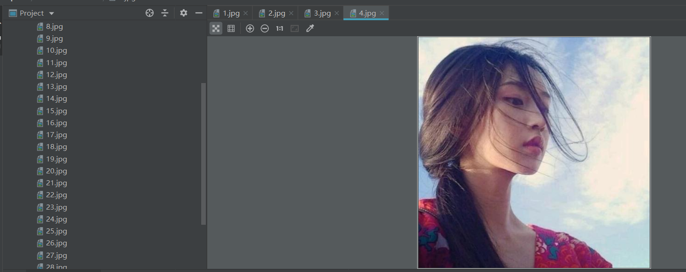

原文连接:https://www.cnblogs.com/jiyu-hlzy/p/11746292.html
- Socket下载一张图片
- Socket下载一页图片
Socket下载一张图片
在百度搜索头像，挑一张
复制图片的路径打开，并保存这个url
把这个url的域名和路径分开
首先导入socket模块
第一步：创建套接字客户端
第二步：发起连接，connect()参数填域名和端口，http协议端口默认为80
第三步：构造报文

报文里的URL就是一开始从图片地址将域名和路径分出来的，然后将报文写在一行
第四步：发送HTTP请求
此时运行会报错
因为Socket 发送和接收的都是bytes的数据，需要字节对象，现在的还是字符串，通过encode()编码
第五步：循环接收响应的内容
因为不知道响应的内容具体有多少，每次从管道中取出1024字节，取完为止，然后可以打印出res，看看接收到的数据

第六步：通过正则匹配图片的内容（去掉响应头）
这个也得用bytes的数据去匹配，匹配完返回的类型是一个列表
最后一步：把图片写入到本地
图片的内容本身就是二进制，就不用decode()解码了
Socket下载一页图片
依然选择的是头像这个网页，这次不用选择图片，直接把这一页的全给下载到本地
复制这个网页的路径，并保存这个URL
第一步：把网页的url赋值给一个变量保存，为方便后续识别，可以在注释里把域名和路径区分开
第二步：写一个方法，方便多次使用（跟上面下载一张图片的步骤一样）
第三步：构造报文（报文里的路径是刚才在注释里为方便识别而区分开的），将域名和报文传入这个方法，打印显示接收到的内容，返回的是bytes类型，打印的时候需要decode()
这时，你会发现，这响应的内容就是网页的源代码
第四步：这时，需要到网页里去寻找出图片的url，知道url才知道下载的东西在哪里
复制URL到网页的源代码中搜索，找到三个URL
每个url前都有一个不同的参数，需要下载一页图片，就要知道所有图片的url的共同点，把这三个参数分别去搜索了一下，发现，都有30次的出现，这就能确定是所有图片url都带有的了
第五步：找到url的特点后，我们可以通过正则在返回的源码中匹配出所有图片的url
最后一步：通过for迭代，依次对列表里的url进行下载
这时，每张图片的url的已经出来了，接下来就是跟上面下载一张图片一样的操作了
现在运行就搞定了
